專案管理
專案管理
Week1
Project：完成需求
Program：完成所有需求
Project Defined(專案定義)：
A temporary endeavor undertaken to create a unique product, service, or result
為創造獨特的產品、服務、結果所做的短暫努力
Major Characteristics of a Project(專案的主要特點)：
1. Has an established objective
有確立的目標
2. Has a defined life span with a beginning and an end
有生命週期(具有開始及結束)
3. Involves several departments and professionals
涉及一些部門及專業人士
4. Involves doing something never been done before
涉及之前從未做過的事
5. Has specific time, cost, and performance requirements
有特定時間、成本、表現需求
Program Defined(計畫定義)：
A group of related projects designed to accomplish a common goal over an extended period of time
在較長的時間內完成共同目標的一組相關專案
Program Management Defined(計劃管理定義)：
A process of managing a group of ongoing, interdependent, related projects in a coordinated way to achieve strategic objectives
以協調的方式管理一組正在進行的、相互依賴的、相關的項目以實現戰略目標的過程
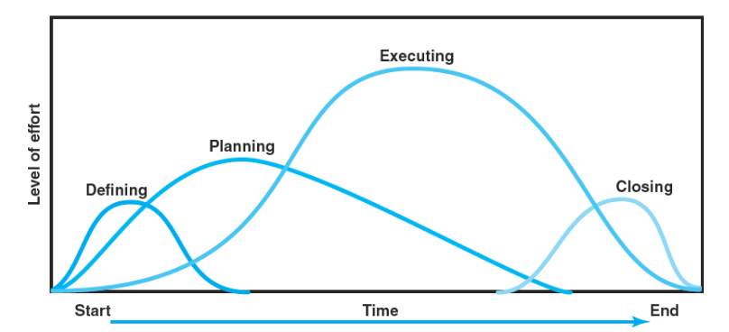
Project Life Cycle：
Defining：Goals(目標)、Specifications(規範)、Tasks(任務)、Responsibilities(職責)
Planning：Schedules(時程)、Budgets(預算)、Resources(資源)、Risks(風險)、Staffing(人員)
Executing：Status reports(狀態報告)、Changes(變化)、Quality(質量)、Forecasts(預測)
Closing：Train customer(培訓顧客)、Transfer documents(傳輸文檔)、Release resources(發布資源)、Evaluation(評估)、Lessons learned(經驗學習)
Project Manager：
Must induce the right people at the right time to address the right issues and make the right decisions
必須在正確的時間引導正確的人解決正確的問題並做出正確的決定
A Socio-Technical Approach：
Technical Dimension(技術)：
Consists of the formal, disciplined, purely logical parts of the process
包含正式、有紀律、純邏輯部分的過程
Includes planning, scheduling, and controlling projects
包含計畫、排程、專案控制
Sociocultural Dimension(社會)
Centers on creating a temporary social system within a larger organizational environment that combines the talents of a divergent set of professionals working to complete the project
在更大的組織環境中創建臨時社會系統來結合不同的專業人員完成該專案
Week2
Two main reasons project managers need to understand their organization’s mission and strategy：
項目經理需要了解組織的任務及策略的兩個主要原因
1. Make appropriate decisions and adjustments
做出適當的決定和調整
2. Be effective project advocates
成為有效的專案提倡者
Strategic Management Defined：(策略管理定義)
1. Process of assessing “what we are” and deciding and implementing “what we intend to be and how we are going to get there"
評估”定位”以及決定”方向及方法的過程
2. A continuous, iterative process aimed at developing an integrated and coordinated long-term plan of action
一個持續的、跌代的過程，發展一個綜合且協調的長期計劃
3. Requires strong links among mission, goals, objectives, strategy, and implementation
需要在任務、目標、目的、策略、實作中緊密連結
Four Activities of the Strategic Management Process：
1. Review and define the organizational mission (what we want to become)
審查和定義組織任務
2. Analyze and formulate strategies (what needs to be done)
分析和制定策略
3. Set objectives to achieve strategies (where a firm is headed、when it is going to get there)
設定目標以實現策略
4. Implement strategies through projects (how strategies will be realized)
通過專案實施策略
Characteristics of Objectives：(目標特質)
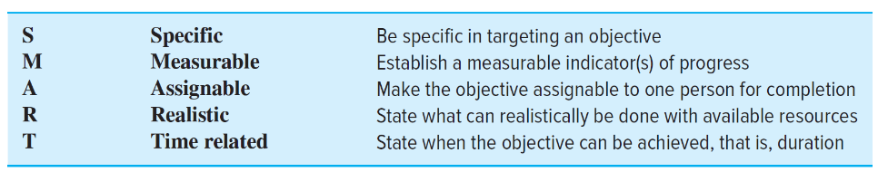
Implementation of projects without a strong priority system linked to strategy create problems：(在沒有策略優先權系統的情況下實作專案會產生問題)
1. The Implementation Gap
實作差距
2. Organization Politics
組織政策
3. Resource Conflicts and Multitasking
資源衝突和多任務處理
Project Classification：(專案分類)
compliance projects(合規專案)、strategic projects(策略專案)、operational projects(運行專案)
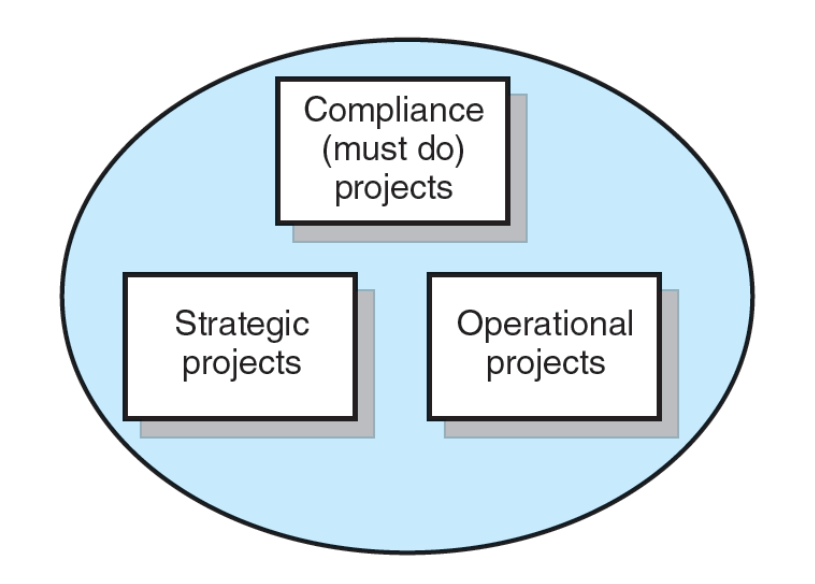
Phase Gate Model：
A series of gates that a project must pass through in order to be completed
專案必須通過才能完成的一系列閘門
ensure that the organization is investing time and resources on worthwhile projects
確保組織在有價值的專案上投入時間和資源
Each gate is associated with a project phase and represents a decision point
每個閘門都與一個專案相關聯且每一階段代表一個決策點
A gate can lead to three possible outcomes: go (proceed), kill(cancel), or recycle (revise and resubmit)
一個閘門可以導致三種可能的結果：go(繼續)、kill(取消)或recycle(修改並重新提交)
Selection Criteria：(選擇標準<衡量標準>)
Financial Criteria：(財務標準)
Payback Model：
定義：
衡量獲得專案投資回報所需的時間
是最簡單、應用最廣泛的模型
強調現金流
缺點：
忽略貨幣的時間價值
不考慮盈利
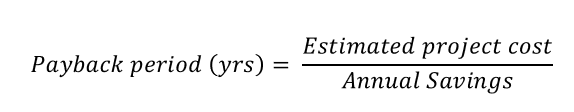
Net Present Value (NPV)：
定義：
使用最低期望回報率來計算所有淨現金流入的現值
期望更高的正 NPV
更現實，考慮貨幣的時間價值、現金流量和盈利能力
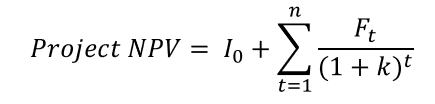
Nonfinancial Criteria：(非財務標準)
衡量策略目標的範例：
爭取更大的市場份額
使競爭對手難以進入市場
Multi-Criteria Selection：(多標準選擇)
Checklist Models：
使用問題用列表的方式來審查潛在的專案並確定接受與否
不同類型的專案在選擇時具有更大的靈活性
Multi-Weighted Scoring Models：
使用多個加權選擇標準來評估專案
包括定性和/或定量標準
允許與其他潛在專案進行比較
Applying a Selection Model：
1. Project Classification：(專案分類)
確定專案是否符合組織戰略
選擇模型(加權評分標準模型)
2. Sources and Solicitation of Project Proposals(專案建議的來源和徵集)
3. Ranking Proposal and Selection of Projects：(排名提案和專案選擇)
根據可行性、對策略目標的潛在貢獻以及是否適合當前專案組合來評估每個提案
根據給定的選擇標準和當前的投資組合拒絕或接受專案
Week3
Project Management Structures：(專案管理結構)
Functional manager(職能經理)：依功能來分組，例如組員都是網路專長，那組長即為functional manager
Project manager(專案經理)：依專案來分組，例如蓋房子的專案，組員要有會水電的，土木的，裝潢的，組長就是project manager
Matrix manager(矩陣經理)：組長兼任以上兩種角色
Functional organization：(功能組織)
1. 最高管理層決定實施專案，並將專案的不同部分分配到適當的位置
2. 通過正常的管理保持協調
3. 當一個功能在完成專案的過程中能起到作用或對專案的成功具有利益時，使用該結構
優點：
1. 較無變化
2. 靈活性高
3. 深入的專業知識
4. 簡易的專案後過渡
缺點：
1. 缺乏重點
2. 整合力不足
3. 實作較為緩慢
4. 缺乏所有權
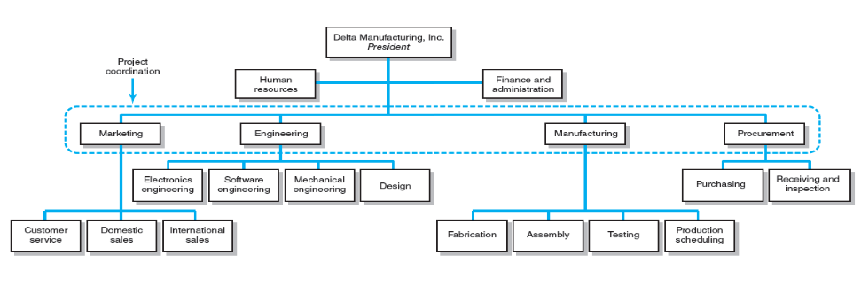
Dedicated project teams：(專門的專案團隊)
1. 作為獨立於上級組織其餘部分的單位運作
2. 指定一名專案經理來召集專門從事該項目的核心專家組
3. 專案經理須從公司內外招聘必要的人員
4. 在以該專案為主要業務形式的項目化組織中，整個組織的重點在於支持專案團隊
5. Projectitis被視為該結構的負面維度。專案成員和組織的其他成員之間可能會形成we-they attitude，產生不同的群體
優點：
1. 簡單
2. 快速
3. 內聚
4. 跨功能整合
缺點：
1. 費用高
2. 容易產生內部紛爭
3. 技術能力容易遭到限制
4. 專案後過渡較為困難
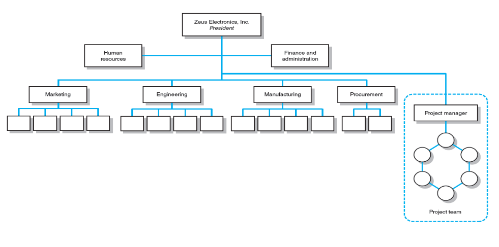
Matrix structure：(矩陣結構)
1. 是一種混合組織形式
(1) 通常有兩條控制鏈，一條沿著功能性，另一條沿著專案本身
(2) 項目參與者同時向職能經理和專案經理報告
2. Matrix structure重點在於優化資源利用
(1) 個人能從事多個項目並能夠完成職責
(2) 通過創建和合理化專案經理的權限來實現更大的整合
(3) 提供功能/技術知識和專案需求的重點
優點：
1. 有效率
2. 突出專案重點
3. 更輕鬆的專案後過渡
4. 靈活性較高
缺點：
1. 功能失調的衝突
2. 內鬥
3. 產生較大的壓力
4. 執行較緩慢
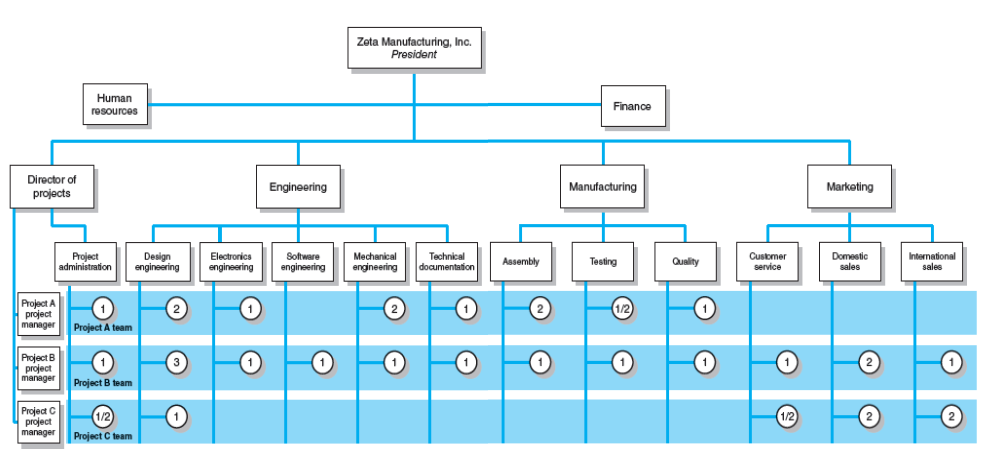
Matrix Form：
1. Weak matrix(弱矩陣)：對於技術簡單的項目適合採用弱矩陣型組織
(1) 只是有一個專案經理負責協調項目活動
(2) 職能經理負責管理他們的工作
(3) 專案經理負責制定進度表和清單，收集有關工作狀態的信息，並促進專案的完成
在這種組織形式里，項目可能只有一個全職人員，即項目經理，項目成員不是直接從職能部門調派過來，而是利用他們在職能部門為項目提供服務。
2. Balanced matrix(平衡矩陣)：對於有中等技術複雜程度而且周期較長的項目，適合採用平衡型矩陣組織
(1) 專案經理負責定義需要完成的工作。專案經理需制定完成項目的總體計劃，整合不同專業的貢獻，設定時間表，監控進度等
(2) 職能經理注重於如何完成任務。職能經理負責根據專案經理設定的標準和時間表分配人員並執行他們的工作
平衡矩陣中對各項目均任命專案經理，並且賦予他應有的職權及責任，專案經理以對部門及該部門中主要工作(或重要)人員的管理為主，由職能經理負責各個職能項目團隊中一般人員的管理。
3. Strong matrix(強矩陣)：對於技術複雜而且時間相對緊迫的項目，適合採用強矩陣組織
(1) 專案經理控制項目的大部分方面，包括範圍權衡和職能人員的分配。專案經理控制專家何時做什麼以及做什麼，並對重大項目決策擁有最終決定權。
(2) 職能經理對他們的員工擁有所有權，並根據需要進行諮詢
強矩陣組織結構在系統原有的職能組織結構的基礎上，由系統的最高領導任命對專案全權負責的專案經理，專案經理直接向最高領導負責
Project Management Office(PMO)：
是組織或部門內監督和支持專案執行的集中單位
在幫助矩陣系統成長為更有效的專案交付平台方面發揮著關鍵作用
分為不同種類：
1. Weather station：跟踪和監控專案績效
2. Control tower：改善專案執行
3. Resource pool：為組織提供專案經理和專業人員
4. Command and control center：對專案有直接的權力
正確的專案管理結構判斷時須考量的項目：
組織方面：
1. 專案管理對公司的成功有多重要
2. 多少百分比的核心工作涉及專案
3. 可用的資源有多少
專案方面：
1. 專案規模
2. 策略重要性
3. 新穎性和創新需求
4. 整合需求(涉及的部門數量)
5. 環境複雜性(外部接口數量)
6. 預算和時間限制
7. 資源需求的穩定性
Organizational Culture：(組織文化)
1. 是一個共享規範、信念、價值觀和假設的系統，從而創造共享的意義
2. 反映組織的個性
3. 組織中執行的重要功能：
(1) 為成員提供認同感
(2) 幫助管理系統合理化
(3) 闡明並加強行為標準
(4) 幫助建立社會秩序
Week4
Project Scope：(專案範圍)
1. 是對專案最終結果或任務的定義(ex：為客戶/顧客提供的產品或服務)
2. 以具體、有形和及可衡量的方式定義要實現的結果
Purposes of the Project Scope Statement：(專案範圍說明書的目的)
1. 為最終用戶明確定義可交付成果
2. 直接關注客戶和專案參與者的專案目的
3. 供專案所有者和專案參與者發布和使用，用於規劃和衡量專案
內容應該完全包含專案章程有關專案範圍的所有資訊，如在發展專案範圍說明書之間，對專案章程有疑問，應該與專案資助人討論並釐清疑點。
專案範圍說明書包括：
1. 產品範疇說明書－描述專案所要產生的產品或服務
2. 允收條件－所有交付標的應該達到的標準，也就是驗收的標準
3. 專案排除事項－專案範圍除了專案該做的之外，還要釐清專案不該做的
4. 限制條件－一定要遵守的事項
5. 假設事項－專案在規劃時會需要對未來不確定的事情先做一假設，否則無法進行後續規劃
Project Scope Checklist：(專案範圍清單)
1. Project objective 專案目標
2. Product scope description 產品範圍說明
3. Justification 理由
4. Deliverables 可交付成果
5. Milestones 里程碑
6. Technical requirements 技術需求
7. Limits and exclusions 限制及排斥
8. Acceptance criteria 驗收標準
Scope Statements：(範圍說明書)
1. 是一個簡短的、一至兩頁的範圍關鍵元素摘要，是每個元素的擴展文檔
2. 也稱為工作說明書(SOWs)
Project Charter：(專案章程)
1. 是授權專案經理啟動和領導專案的文件
2. 包括簡短的範圍描述以及風險限制、業務案例、支出限制等項目
Scope Creep：(範圍蔓延)
專案範圍是否有隨時間擴展的趨勢(通常是通過改變需求、規範和優先級)
一個變更引發了另一個變更，且因為已經做了第一個變更，只好做下一個，然而，一個又一個接踵而至，直至難以辨別專案的範疇為何
原因：
1. Poor requirement analysis需求分析不佳
2. Not involving users early enough沒有及早讓用戶參與
3. Underestimating project complexity低估專案的複雜性
4. Lack of change control 缺乏變更控制
5. Gold plating 鍍金：對專案不一定有加分效果，但可能因多餘的事情而造成成本的增加、範圍的增加等
專案經理的三個權衡標準：
1. Cost(budget) 成本(預算)
2. Time(schedule) 時間(進度)
3. Performance(scope) 績效(範圍)
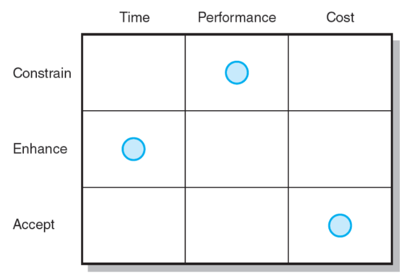
專案經理可以通過專案的優先級矩陣來管理專案權衡：
1. Constrain(約束)：原始參數是固定的
2. Enhance(增進)：一個標準應該被優化
3. Accept(接受度)：可以容忍不符合原始參數的標準
Work Breakdown Structure(WBS)：(工作分解結構)
1. 是具有不同詳細程度的專案的分層大綱
2. 識別專案中涉及的產品和工作要素
3. 定義最終可交付成果(專案本身)與其子項目之可交付成果的關係
4. 作為跟踪成本和工作績效的框架
5. 適合用來設計和建構具有切實成果的專案
WBS的功能：
1. 向專案經理保證所有產品和工作要素都已識別，將專案與當前組織整合，並建立控制基礎
2. 促進在專案生命週期內對組織中各個級別的成本、時間和技術性能進行評估
3. 提供適合每個組織級別信息的管理
4. 幫助專案經理計劃、安排和編列專案預算
5. 幫助開發組織分解結構(OBS)，將專案責任分配給組織單位和個人
6. 提供將較小工作的預算和實際成本總計為較大工作元素的機會
7. 定義溝通渠道並協助理解和協調專案的許多部分
Work Package：(工作包)
1. WBS中的最低層
2. 是一種具有明確起點和終點、消耗資源、表示成本的短期任務
3. 不應超過10個工作日或一個報告期
4. 應盡可能獨立於同專案中的其他工作包
5. 是用於計劃、進度安排和控制專案的基本單位
WBS中的各個工作包：
what：定義工作
how long：確定完成工作包的時間
cost：確定完成工作包的分時預算
how much：完成工作包所需的資源
who：標識負責工作單元的人
how well：確定用於衡量進展的監測點
Organization Breakdown Structure(OBS)：組織分解結構
1. 描述公司如何組織以履行工作職責
2. 提供一個框架來總結組織單位的工作績效
3. 確定負責工作包的組織單位
4. 將組織單位與成本控制帳戶聯繫起來
Process Breakdown Structure(PBS)：過程分解結構
用於面向過程的專案(process-oriented project)
Process-oriented projects：
1. 是一個”最終結果是一系列步驟和階段的產物”的專案
2. 是一個隨時間發展的專案，每個階段都會影響下一階段
3. 是一個由績效要求而非計劃驅動的專案
Responsibility Matrix(RM)：責任矩陣
1. 也稱為線性責任圖
2. 總結要完成的任務以及誰負責項目中的哪個內容
3. 列出所有專案活動和負責每項活動的參與者
4. 闡明需要協調的單位和個人之間的接口
5. 為專案中的所有參與者提供查看其職責並將其分配達成一致的方法
6. 闡明每個參與者權力的範圍或類型
Week5
Project Estimating：(專案評估)
定義：
1. 是預測或評估完成專案可交付成果的時間和成本的過程
2. 是一種權衡，平衡高準確性的好處與確保提高準確性需耗費的成本
類型：
Top-down：評估模擬、群體共識或數學關係
Bottom-up：對工作分解結構中的元素進行評估
Factors Influencing the Quality of Estimates：(影響評估質量的因素)
1. Planning Horizon 計畫水平
2. Project Complexity 專案複雜度
3. People-Project Structure and Organization 人與專案的結構與組織
4. Padding Estimates 填充評估
5. Organizational Culture 組織文化
Estimating Guidelines for Times, Costs, and Resources：(時間、成本和資源的估算準則)
1. Responsibility 責任
2. The use of several people to estimate 多人評估
3. Normal conditions 正常情況
4. Time units 時間單位
5. Independence 獨立性
6. Contingencies 突發性
7. Risk assessment added to the estimate to avoid surprises to stakeholders
將風險添加到評估中以避免給利益相關者帶來意外
Top-Down Estimates：
通常來自使用經驗或信息來確定專案持續時間和總成本
有時，高層管理人員對用於完成專案的組成活動知之甚少
Bottom-Up Estimates：
在專案被詳細定義之後進行
將工作包和相關成本匯總到主要可交付成果來檢查WBS中的成本要素
將低成本、高效的方法與任何強加的限制進行比較
定義專案的方式：
1. 進行粗略的Top-down評估
2. 發展WBS/OBS
3. 進行Bottom-up評估
4. 制定時間表和預算
5. 協調Top-down和Bottom-up評估之間的差異
評估方式的耗時及成本：
Top-Down：
1. Consensus Method 共識法
2. Ratio Method 比率法
3. Apportion Method 分配法
4. Function Point Methods for Software and System Projects軟體及系統專案的功能點方法
5. Learning Curves 學習曲線
Bottom-Up：
1. Template Method 模板法
2. Parametric Procedures Applied to Specific Tasks 應用於特定任務的參數程序
3. Range Estimating 範圍評估
Level of Detail：(詳細程度)
WBS的詳細程度因以下因素而異：
1. 專案的複雜性
2. 控制需求
3. 專案規模、成本和持續時間
Excessive detail：(過多的細節)
1. 強調部門成果而不是可交付成果
2. 創建無效率的工作
Inadequate detail：(細節不足)
未能滿足結構的需要
Types of Costs：(成本類型)
Direct Costs：(直接成本)
明確負責特定的工作包(ex：勞動力、材料、設備等)
Direct Project Overhead Costs：(直接專案間接成本)
可以綁定到專案可交付成果或工作包(ex：專案經理的薪水、專案團隊的臨時租賃空間、用品等)
General and Administrative Overhead Costs：(一般和行政(G&A)間接費用)
不直接關係到特定專案(ex：廣告、會計、高級管理人員薪酬等)
Refining Estimates：(精煉評估)
調整評估的原因：
1. 交互成本隱藏在評估中
2. 正常條件不適用
3. 專案出現問題
4. 專案範圍和計劃發生變化
5. 進行策略性的虛假陳述
Mega Projects：(大型專案)
定義：
1. 是大型、複雜的企業，通常需要耗費大量資金與時間並涉及多個私人和公共利益相關者
Ex：高鐵、機場、奧運會等
2. 經常遭遇雙重打擊(禍不單行)
Ex：專案成本遠高於預期，且未能充分發揮專案應提供的效益
3. 有時被稱為” white elephant”
原因：專案超出預算，低於價值，維護專案的成本超過了收益
Reference Class Forecasting(RCF)：(參考類別預測)
定義：
是一種由考慮到在過去所採取的類似行動的成果和其結果的預測方法
優點：
1. 外部經驗資料減輕了人為偏見
2. 政策、策略和促進力量很難忽視外部的RCF資訊
3. 可作為資助大型專案的實際檢查
4. 為專案應急基金提供基礎
Week6
Project Network：(專案網路)(時序圖sequence diagram)
定義：
1. 是一個流程圖，描述必須完成的專案活動、邏輯順序、活動的相互依賴性、活動開始和結束的時間及通過網絡的關鍵路徑(最長路徑)
2. 為安排勞動力和設備提供基礎
3. 加強專案利益相關者之間的溝通
4. 提供專案持續時間的估計
5. 為現金流量預算提供基礎
6. 確認”關鍵”活動，需要優先執
7. 顯示需考慮壓縮專案工期的活動
8. 幫助制定並遵守專案計劃
Project Network Terminology：(專案網路術語)
1. Activity(活動)：專案中需要時間但可能不需要資源的元素
2. Parallel activities(平行活動)：可以同時進行的活動
3. Burst activity(突發活動)：一個活動後有多個活動緊跟其後(不止一個從它指出的依賴箭頭)

4. Merge activity(合併活動)：一項活動在其前面有多個活動(多個箭頭指向它)
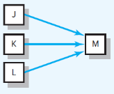
5. Path(路徑)：一系列相互關聯、相互依賴的活動
6. Critical path(關鍵路徑)：通過網絡持續時間最長的路徑
兩種繪製方法：
Activity-on-Node(AON)：使用節點來描述活動
Activity-on-Arrow(AOA)：使用箭頭來描述活動
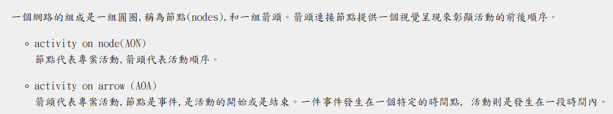
開發專案網路的基本規則：
1. 網路流程圖通常從左指向右
2. 一項活動只有在所有之前的相關活動都完成後才能開始
3. 網路的箭頭表示前例和流程，可以相互交叉
4. 每項活動都有唯一的標示號碼
5. 後方活動的標示號碼必須大於之前的任何活動的標示號碼
6. 不允許循環、條件語句
7. 在有多個開始的情況下，可以使用一個公共開始節點作為網路中一個明確的專案起點
Network Computation Process：(網路計算過程)
Forward Pass：(正向運算)
1. How soon can the activity start ? (early start—ES)
活動多久可以開始
2. How soon can the activity finish? (early finish—EF)
活動多久可以結束
3. How soon can the project finish? (expected time—TE)
專案多久可以完成
Backward Pass：(反向運算)
1. How late can the activity start? (late start—LS)
活動最遲什麼時候開始
2. How late can the activity finish? (late finish—LF)
活動最遲多久結束
3. Which activities represent the critical path? (critical path—CP)
哪些活動代表關鍵路徑
4. How long can the activity be delayed? (slack or float—SL)
活動可以延遲多長時間
Forward Pass Computation：(正向運算)
1. 沿著網路中的每條路徑添加活動時間(ES+ Duration<持續時間> = EF)
2. 將EF帶到下一個活動，並設置為ES
3. 若下一個後續活動是合併活動，所有前置活動中最大EF將會被選擇
Backward Pass Computation：(反向運算)
1. 從專案結束活動沿每條路徑減去活動時間(LF - Duration<持續時間> = LS)
2. 將LS帶到下一個活動，並設置為LF
3. 若下一個後續活動是突發活動，所有後續活動中最小LS將會被選擇
Slack Times：(寬鬆時間)(在不影響專案期限下，特定專案可以最晚開始或完成的時間)
Total Slack：
1. 定義活動可以延遲的時間量，而不是延遲專案的時間量
2. 在不影響專案結束日期的情況下，一項活動可以超過其最早完成日期多長時間
3. LS和ES的差(LS-ES=SL)或LF和EF的差(LF-EF=SL)
Free Slack：
1. 在不延遲後續活動的情況下可以延遲活動的時間量
2. 在不影響任何後續活動的最早開始日期的情況下，一項活動可以超過其最早完成日期多長時間
3. 允許靈活地安排資源
4. 發生在活動鏈末尾的活動，且有一個合併活動
Critical Path：(關鍵路徑)
1. 網路路徑是否具有最少的共同寬鬆度(slack)
2. 是通過活動網路的最長路徑
3. 是整個專案可以完成的最短時間，且會影響完成時間
4. 建議選用優秀人才
5. 風險評估時要特別注意的部分
6. 其他經理要求”借用”人員或設備時，忽略的部分
7. 當沒有時間監控所有活動時，作為可以查看的地方
Sensitivity：(靈敏度)
1. Network sensitivity(網路靈敏度)是專案啟動後原始關鍵路徑發生變化的可能性
2. 只有一個關鍵路徑和具有大量鬆弛的非關鍵活動的網路排程將被標記為”不靈敏”
Extended Network Techniques：(擴展網路技術)
Laddering：(階梯式)
活動被分成幾個部分，以便後續活動可以更快地開始而不耽誤工作
Use of Lags to Reduce Schedule Detail and Project Duration：(透過停滯的方式減少排程細節和專案持續時間)
1. 停滯是相關活動延遲開始或結束的最短時間
2. 冗長的活動被分解，以減少後續活動開始的延遲
3. 停滯可用於約束完成到開始、開始到開始、完成到完成、開始到完成等組合關係
Hammock Activity：(吊床活動)
1. 跨越專案的一部分
2. 持續時間在網路規劃制定後確定
3. 在分配和控制間接專案成本方面非常有用
4. 用於聚合專案的各個部分，以便於獲得專案特定部分的正確詳細資訊
Week7
Risk Defined(風險定義)：
1. 不確定的事件或條件，如果發生，會對項目目標產生積極或消極的影響
2. 再多的計劃也無法避免或控制風險
Risk Management Defined(風險管理定義)：
嘗試確認專案實施時可能發生的潛在或不可預見的問題點
1. What can go wrong (risk event)
什麼可能出錯（風險事件）
2. How to minimize the risk event’s impact (consequences)
如何將風險影響降到最低（結果）
3. What can be done before an event occurs (anticipation)
事件發生前可以做什麼（預期）
4. What to do when an event occurs (contingency plans)
事件發生時該怎麼辦（應急計劃）
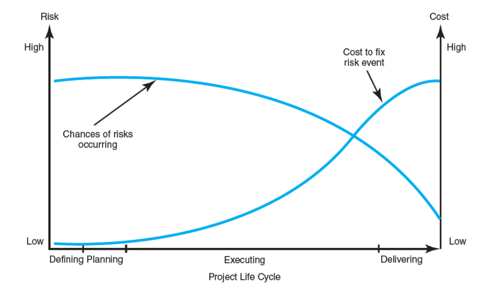
風險管理的好處：
1. 主動而非被動的方法
2. 減少意外和負面結果
3. 準備專案經理採取適當的行動
4. 提高按時、在預算範圍內實現專案目標並達到所需績效的機會
定義專案風險：
1. Risk Identification(風險識別)：
(1) 通過集思廣益和其他問題識別技術識別可能影響專案的所有可能風險
(2) 關注可能產生後果的事件，而不是專案目標
(3) 結合使用風險分解結構（RBS）和工作分解結構（WBS）來識別和分析風險
(4) 先識別風險的廣面，再檢查具體領域
(5) 使用風險概況（問題列表）來解決專案中傳統的不確定性領域
2. Risk Assessment(風險評估)：
(1) 根據每個風險事件的重要性概率和影響進行評估
(2) 使用風險評估表評估風險事件的嚴重程度、發生概率及其檢測難度
(3) 使用風險嚴重性矩陣確定要解決的風險的優先級
Failure Mode and Effects Analysis (FMEA) 故障模式和影響分析：
Risk Value = Impact x Probability x Detection
風險值 = 影響 x 概率 x 檢測
(4) 概率分析使用統計技術來評估項目風險：
Decision trees, net present value (NPV), program evaluation and review technique (PERT), PERT simulation
決策樹、淨現值 (NPV)、項目評估和審查技術 (PERT)、PERT 模擬
3. Risk Response Development(風險應對發展)：
(1) Mitigating Risk(降低風險)：
降低事件發生的可能性
減少不利事件對項目的影響
(2) Avoiding Risk(迴避風險)：
改變專案計劃以消除風險或條件
(3) Transferring Risk(轉移風險)：
將風險轉嫁給另一方
(4) Escalating Risk(升級風險)：
將威脅通知組織內的適當人員
(5) Retaining Risk(保留風險)：
有意識地決定接受事件發生的風險
4. Risk Response Control(風險應對控制)：
(1) Risk Register(風險登記)：
詳細說明所有已識別的風險，包括描述、類別、發生概率、影響、反應、應急計劃、所有者和當前狀態
(2) 風險控制
包含：執行風險應對策略、監控觸發事件、啟動應急計劃、關注新風險
(3) 建立變更管理系統
內容包含：
1. 監控、跟踪和報告風險
2. 營造開放的組織環境
3. 重複風險識別/評估練習
4. 分配和記錄管理風險的責任
Contingency Planning(應急計畫)：
定義：
1. 如果可能預見的風險事件成為現實，將使用替代計劃
2. 減少或減輕風險事件負面影響的行動計劃
3. 不是初始實施計劃的一部分，只有在確認風險後才會生效
風險類型及適當的應急計畫：
1. Technical Risks(技術風險)：
選擇的技術失敗時，備份策略
評估是否可以解決技術不確定性
2. Schedule Risks(進度風險)：
加速或”破壞”專案以使其重回正軌
並行安排活動或使用start-to-start lag relationship
用最優秀的人來完成高風險的任務
3. Cost Risks(成本風險)：
審查價格，避免以一筆過的價格覆蓋價格風險的陷阱
4. Funding Risks(資金風險)：
評估資金減少的風險(項目削減)
Opportunity Management(機會管理)：
定義：
對項目目標產生積極影響的事件
類型：
1. Exploit(開發)：
尋求消除與機會相關的不確定性，以確保它一定會發生
2. Share(分享)：
將機會的部分或全部所有權分配給最有能力為專案利益抓住機會的另一方
3. Enhance(增進)：
採取行動增加機會的可能性和/或積極影響
4. Escalate(升級)：
將機會通知組織內的適當人員
5. Accept(接受)：
願意在機會出現時利用它，但不採取行動去追求它
Contingency Funding and Time Buffers(應急資金與時間緩衝)：
Contingency Funds(應急資金)：
是否有資金覆蓋專案風險：已識別和未知
類型：
1. 應急儲備：涵蓋已識別的風險並分配給專案的特定部分或可交付成果
2. 管理儲備：涵蓋未識別的風險並分配給與整個專案相關的風險
Time Buffers(時間緩衝)：
是否有大量時間用於緩衝專案中的潛在延遲
Change Control Management(變更控制管理)：
變更原因：
1. 專案範圍變更
2. 應急計劃的實施
3. 改進變化
變更管理系統包含：
1. 確定提議的變更
2. 列出變更進度和預算的預期影響
3. 正式審查、評估和批准或不批准變更
4. 協商並解決變更、條件和成本的衝突
5. 與受影響的各方溝通變化
6. 分配實施變更的責任
7. 調整總進度和預算
8. 追蹤所有要實施的變更
變更控制管理的好處：
1. 正式流程不建議無關緊要的更改
2. WBS和績效指標的完整性得到維護
3. 追蹤應急和管理儲備的分配和使用
4. 明確實施責任
5. 所有相關方都可以看到更改的效果
6. 監控變更的實施
7. 範圍變更將迅速反映在基線和績效指標中
Week8
Resources and Priorities(資源及優先事項)：
在分配資源之前，專案網路不是時間表
1. 專案提案中的敘述總是多於可用資源
2. 只有在資源可用的情況下，專案優先級團隊才會添加新專案
成本估算在按時間分段之前不是預算：
資源分配完成後，就可以為專案制定預算計劃
Resource Smoothing(資源平滑)：
涉及嘗試通過延遲非關鍵活動(使用slack)來降低資源需求來平衡對資源的不同需求，從而在專案週期內資源充足時提高資源利用率
Resource-Constrained Scheduling(資源限制排程)：
當資源不足以滿足需求時發生。 一些活動的延遲啟動必須推遲，專案的持續時間可能會增加
Technical or Logical Constraints(技術或邏輯約束)：
與專案活動必發生的網路順序相關
Resource Constraints(資源限制)：
1. 當資源的缺失、短缺或獨特的相互關係和相互作用特徵需要對專案活動進行特定排序時發生
2. 注意資源依賴優先於技術依賴
3. 資源限制的類型：
(1) People 人
(2) Materials 材料
(3) Equipment 設備
Time-Constrained Project(時間限制專案)：
1. 必須在規定的日期前完成
2. 時間是固定的，資源是靈活的。如果需要，可以添加資源以確保專案在特定日期之前完成
Resource-Constrained Project(資源限制專案)：
1. 不能超過可用資源
2. 資源固定，時間靈活。如果資源不足，推遲專案也是可以接受的
Limiting Assumptions(限制假設)：
1. 不允許分裂(Splitting)活動：中斷一項任務的工作，將資源分配給另一項任務一段時間，然後再分配給原來的任務
2. 用於活動的資源級別無法更改
Risk Assumptions(風險假設)：
1. 最鬆懈的活動帶來的風險最小
2. 靈活性的降低不會增加風險
3. 活動的性質(難易度)不會增加風險
Time-Constrained Project細項：
1. 定義：
(1) 必須在規定的日期前完成
(2) 注重資源利用需要
(3) 使用資源平滑技術來平衡對資源的需求
2. Smoothing Techniques(平滑技術)：
通過使用正鬆弛來減少需求並填補資源的低谷，而不延遲整個專案，從而延遲非關鍵活動
3. 平滑資源需求的目標：
(1) 減少資源需求的高峰期
(2) 減少專案生命週期內的資源數量
(3) 最小化資源需求的波動
4. 平滑資源需求的負面影響：
(1) 因減少鬆弛而失去靈活性
(2) 由於鬆弛減少，創建更多關鍵活動或接近關鍵的活動
Resource-Constrained Project細項：
1. 資源在數量或可用性上是有限的
2. 可通過遵循優先級規則使用heuristics(經驗法則)安排活動：
(1) 最小鬆弛
(2) 最少持續時間
(3) 最低活動標識號
3. 並行方法用於應用heuristics(啟發式)：從項目時間開始，當所需資源超過可用資源時，按照優先級規則首先保留活動
資源限制排程的影響：
1. 減少鬆弛，降低靈活性
2. 增加關鍵活動的數量
3. 對於關鍵活動，因為資源限制被添加到技術限制中，增加了排程複雜性
4. 可能讓傳統的關鍵路徑不再有意義
5. 可以打破順序並使網路具有一組脫節的關鍵活動
6. 可能導致並行活動變成順序活動
7. 可以將活動從關鍵更改為非關鍵
Splitting Tasks(分裂任務)：
1. 是一種排程技術，用於獲得更好的專案進度或提高資源利用率
2. 涉及中斷工作並將資源發送到另一個活動一段時間，然後讓資源恢復原始活動的工作
3. 如果所涉及的工作不包括大量的啟動或關閉成本，則可能會有用處
4. 被認為是專案未能如期完成的主要原因
排程資源的好處：
1. 留出時間考慮合理的替代方案
2. 提供準備”具有日期的時間分段工作包”預算所需的信息
Multi project Resource Schedules(多專案資源排程)：
1. 問題：
(1) 總體進度延誤：共享資源會引起連鎖反應，一個專案的延遲會導致其他專案的延遲
(2) 資源利用效率低下：多個專案的不同進度和要求會造成總體資源需求的高峰和低谷
(3) 資源瓶頸：多個專案所需的關鍵資源短缺導致延誤和進度延期
2. 解決方法：
(1) 創建專案辦公室或部門來監督跨多個專案的資源調度
(2) 使用項目優先系統：資源先到先得
(3) 將單一專案視為一個大專案的一部分，並使排程啟發式適應這個大型專案
(4) 利用專案管理軟體優先分配資源
(5) 外包專案以減少內部管理的專案數量
(6) 僱用臨時工以加快某些落後於計劃的活動
(7) 在內部資源不足以滿足所有專案需求的高峰期時，承包專案工作
使用資源計劃制定專案成本基準：
原因：
1. 確定專案是否按時、提前或落後於計劃，是否超出或低於預算成本
2. 評估花費的資金及完成了多少工作：項目成本基準(planned value, PV)
創建Time-Phased Budget(時間分段預算)：
1. 將每個工作包分配給一個負責人或部門並交付
2. 使用Earned Value(EV,掙值)比較計劃的進度和成本
3. 生成現金流量表和資源使用計劃
Week9
Crash：用於縮短活動或專案的持續時間，超出正常情況下可以完成的時間
縮短專案期間的理由：
1. 上市時間壓力
2. 不可預見的延誤
3. 激勵契約
4. 強加的最後期限和契約承諾
5. 管理費用
6. 將資源重新分配給其他專案的壓力
加速專案完成的選項：
資源不受限制時：
1. 添加資源
2. 外包專案工作
3. 安排加班
4. 建立核心專案團隊
資源受限時：
1. 提高專案團隊效率
2. 快速追踪
3. 使用關鍵鏈管理
4. 縮小專案範圍
5. 妥協質量
Project Indirect Costs(專案間接成本)：
1. 無法與任何特定工作包或活動相關聯的成本
Ex：監督、管理、顧問和利息等管理費用
2. 隨時間直接變化的成本
Project Direct Costs(專案直接成本)：
1. 直接分配給工作包和活動的成本
Ex：勞動力、材料、設備等
2. 代表正常成本(正常時間的低成本、高效方法)
Cost-Duration Graph(成本期間圖)：
用於比較額外成本替代方案的收益
實作步驟：
1. 查找選定專案持續時間的總直接成本
2. 查找選定專案持續時間的總間接成本
3. 將直接和間接成本相加
確定要縮短的活動：
尋找可以在單位時間成本增加最少的情況下縮短的關鍵活動
假設：
1. 成本-時間關係是線性的
2. 正常時間假定低成本、高效率的方法來完成活動
3. Crash time代表了一個限制：在現實條件下可能的最大時間減少
4. 斜率表示單位時間的成本
5. 所有加速必定發生在normal and crash times
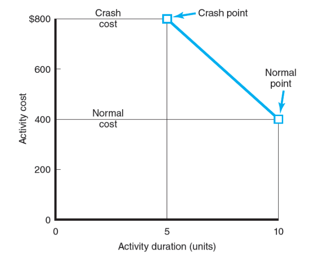
Practical Considerations(實際考量)：
1. 使用專案成本
2. 持續時間圖
3. Crash times：線性假設
4. 重新選擇Crash的活動
5. 減少時間的決定和敏感性
削減成本的常用選項：
1. 縮小專案範圍
2. 讓所有者承擔更多責任
3. 外包專案活動甚至整個專案
4. 執行Brainstorm，思考成本節約選項
Week10
Project monitoring system：(專案監控系統)
包含：
1. 確定要收集的資料
2. 確定收集資料的方式、時間和人員
3. 資料分析
4. 報告當前發展
收集資料時考慮的要點：
1. 專案在進度和成本方面的現狀如何？
2. 完成該專案需要多少費用？
3. 專案什麼時候完成？
4. 現在是否存在需要解決的潛在問題？
5. 成本或進度超支的原因是什麼、誰的問題以及問題點在哪裡？
6. 如果專案中途出現成本超支，我們可以預測完成時的超支嗎？
收集資料及分析時的考量：
1. 專案團隊、承包商、專案經理等會收集資料嗎？
2. 資料是否會從某種形式的替代資料中以電子方式導出？
3. 報告週期應該是一小時、一天、一周還是其他？
4. 是否有收集資料的儲存位置，是否有人負責資料的傳播？
Project Control：(專案控制)
定義：
將實際績效與計劃進行比較以識別偏差、評估可能的其他方案並採取適當的矯正措施的過程
步驟：
1. Setting a baseline plan 設定基線計劃
2. Measuring progress and performance 衡量進度和績效
3. Comparing plan against actual 計劃與實際比較
4. Taking action 採取行動
表示進度的工具：
1. Gantt chart(甘特圖)：最受青睞、最常用、最易懂
2. Control chart(控制圖)：用於繪製專案關鍵路徑上的計劃時間和實際時間之間的差異
3. Milestone(里程碑)：用於讓更多的遠端利益相關者了解專案的進展情況，標誌著主要成就的重大專案事件
甘特圖範例：
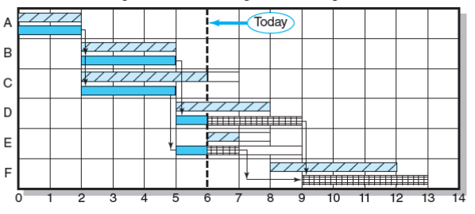
控制圖範例：
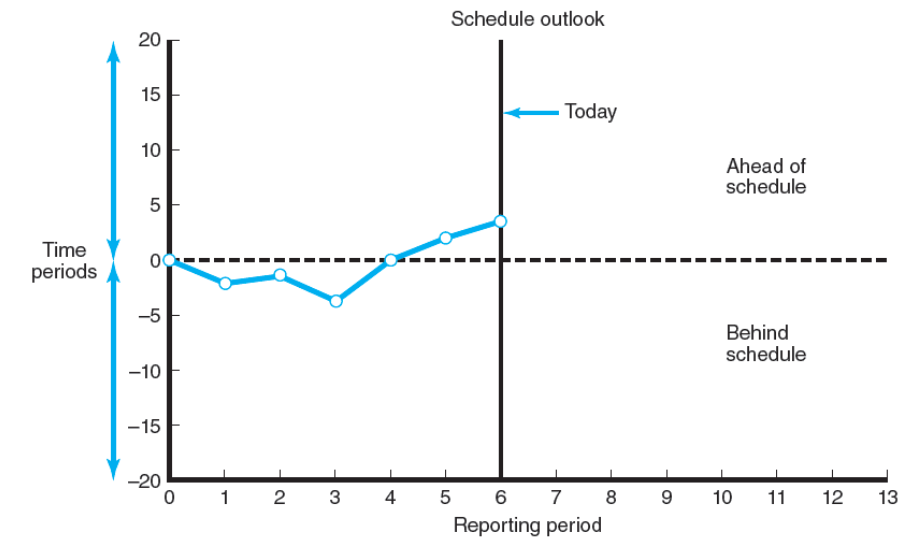
Earned Value Management(EVM)：(掙值管理)
定義：(項目的掙值管理是用與進度計劃、成本預算、實際成本相聯繫的三個獨立的變數，進行、項目績效測量的一種方法。)
1. 是一種結合範圍、進度和資源測量來評估專案績效和進度的方法
2. 使用幾個首字母簡寫和方程式進行分析
3. 使用從WBS、Project network和schedule(進度表)中開發的資料
4. 從提供計劃工作的計劃預算值 (PV)。 然後可以與實際計劃的進度和成本進行比較
定義成本/進度系統：
1. 使用 WBS 定義工作：
包含
(1) 範圍
(2) 工作包
(3) 可交付成果
(4) 組織單位
(5) 資源
(6) 每個工作包的預算
2. 制定工作和資源計劃：
(1) 為活動安排資源
(2) 將時間階段的工作打包成一個網絡
3. 使用活動中包含的工作包製定時間分段預算，稱為計劃預算成本 (PV)
4. 在工作包級別，收集已執行工作的實際成本，已完成工作的實際成本 稱為(AC)。完成原始預算金額的多個百分比以獲得掙值 (EV)
5. 計算進度差異 (SV = EV – PV) 和成本差異 (CV = EV – AC)
Baseline(基線)：是績效評估的基準
Baseline(基線)(PV)的目的：
1. 衡量和報告進展
2. 預估現金流量
將成本分配給Baseline的規則：
1. 成本被放置在Baseline中，完全按照預期
2. 完成百分比是最常用的。 熟悉每項任務的人估計任務已完成的百分比或任務剩餘的百分比
Baseline中包含：
1. 成本賬戶(cost accounts)的總和，每個account是該account中工作包的總和
2. 三種直接成本通常包括在Baseline中：勞動力、設備和材料
Variance Analysis(變異分析)的方法：
比較earned value(掙值)與預期的進度值及實際費用
評估專案的當前狀態需要三個元素：
1. Planned cost of the work scheduled (PV)：排定工作的計劃成本
2. Budgeted cost of the work completed (EV)：已完成工作的預算成本
3. Actual cost of the work completed (AC)：完成工作的實際成本
計算schedule variance(進度差異)(SV)和cost variance(成本差異)(CV)：
正向差表示理想條件，負向差表示已經發生的問題或變化
Cost variance(成本差異)：CV = EV – AC
評估在專案生命週期的任何時候，完成的工作成本是否高於或低於計劃成本
Schedule variance(進度差異)：SV = EV – PV
1. 對迄今為止計劃的專案中的所有工作包進行總體評估。
2. 不包含關鍵路徑信息
3. 以金額而不是時間來衡量
Variance at completion(完成時的差異)：VAC = BAC – EAC
表示專案完成時的成本是否與計劃的不同
監測指標：
Performance Indexes(效能指標)：
1. Cost performance index (費用績效指標)：CPI = EV / AC
衡量迄今為止完成的工作的成本效率
2. Scheduling performance index(進度績效指標)：SPI = EV / PV
衡量迄今為止的排程效率
Project Percent Complete Indexes(專案完成百分比指標)：
1. Percent complete index budgeted costs(完成指數預算成本百分比)：PCIB = EV / BAC
2. Percent complete index actual costs(完成指數實際成本百分比)：PCIC = AC / EAC
3. Management reserve index(管理儲備金)：MRI = CV / MR
反映已被成本超支吸收的管理儲備金額
Additional Earned Value(額外掙值)：
適用於短期活動和/或小成本活動
0/100 rule：
假設在工作包完成時獲得了100%的預算
50/50 rule：
允許在開始時賺取工作包預算值的50%，50%在完成時賺取
Percent complete with weighted monitoring gates(完成加權監控門的百分比)：
使用主觀估計的完成百分比並結合有形的監控點
預測最終專案成本：
用於修改未來專案成本估算的方法：
1. Revised estimated cost at completion(EACre)(修訂後的估計完工成本)：
允許該領域的專家更改原始baseline持續時間和成本
2. Forecasted total cost at completion(EACf)( 預計完工總成本)：
使用迄今為止的實際成本加上的效率指數(CPI = EV / AC)應用於剩餘專案工作
Week11
Project closure(專案收尾)：
種類：
1. Normal
2. Premature(過早)
3. Perpetual(永久)
4. Failed project
5. Changed priority(更改的優先事項)
專案收尾的活動：
1. 得到客戶的交貨驗收
2. 關閉資源並釋放給新的用途
3. 重新分配專案組成員
4. 關閉賬戶並查看所有賬單是否已支付
5. 向客戶交付專案
6. 創建最終報告
Project Audits(專案審計)：
內容：
1. 使用績效指標和預測資料
2. 檢查專案是否成功並審查選擇該專案的原因
3. 包含重新評估專案在組織優先事項中的作用
4. 包含對組織文化的檢查，以確保有利於正在實施的專案類型
5. 可以在專案進行中或專案完成後執行：
進行中專案審計：在專案早期進行，以允許糾正性變更並專注於專案進度和績效
專案後審計：包含更多細節和深度，並強調改進未來專案的管理
專案審計執行要點：
1. 理念必須是專案審計而不是專挑弱點或純粹找麻煩
2. 減少對參與專案的個人或團體的評論
3. 審計活動應該對人的情緒和反應敏感
4. 資料的準確性必須是可驗證的
5. 高級管理層應要宣布並支持專案審計
6. 專案審計的目的不是起訴，而是學習和保存已犯錯誤中有價值的組織資源
7. 專案審計應快速完成
專案審計過程：
1. Initiation and Staffing(啟動及人員配置)：
審核過程的啟動主要取決於組織和專案規模
結果必須代表專案的獨立外部觀點
2. Data Collection and Analysis(資料收集與分析)：
收集信息和數據，從組織和專案團隊的角度回答問題
3. Reporting(報告)：
該報告須從當前或已完成的專案中獲取所需的更改和經驗教訓
Project Retrospectives(專案回顧)：
定義：
在確定專案經驗教訓方面的具體努力
包含：
1. 通過對專案活動的分析來領導專案團隊
2. 使用幾個側重於專案運營以及組織文化如何影響項目成功或失敗的問卷調查
3. 與專案團隊成員、專案經理和其他利益相關者進行一對一的訪問，以更深入地研究因果影響
4. 帶領團隊回顧會議
5. 與團隊合作開發一個系統，為不同的收件人確定信息的優先級
Maturity Model(成熟度模型)：
1. 所有成熟度模型的目的是使組織能夠評估他們在實施最佳最法的進展並轉向改進
2. 專案成熟度模型從組織範圍的角度來看更具包容性
3. 專案管理協會開發的專案成熟度模型的一部分稱為 OPM3
分為：初始、可重複、定義、管理和優化5個級別
Post-implementation Evaluation(實作後評估)：
評估專案團隊、團隊成員和專案經理的執行情況
根據特定標準評估：
1. 團隊評估
2. 個人、團隊成員和專案經理績效評估
3. 個別評論
Team Evaluation(團隊評估)：
1. 根據時間、成本和規範(範圍)以及客戶/最終用戶滿意度達到專案目標
2. 使用由顧問、人力資源部工作人員或電子郵件管理的調查
3. 使用調查結果評估團隊的發展、優勢和劣勢，以及可應用於未來專案工作的經驗教訓
Individual, Team Member, and Project Manager Performance Review(個人、團隊成員和專案經理績效評估)：
績效評估職責：
Functional organization(職能組織)：個人區域經理
Balanced matrix(平衡矩陣)：專案經理和區域經理共同
Project matrix and project organizations(專案矩陣和專案組織)：專案經理
績效評估的重要功能：
發展：確定個人的優勢和劣勢，製定提高績效的行動計劃
評估：評估個人的表現如何，以確定薪水或績效調整